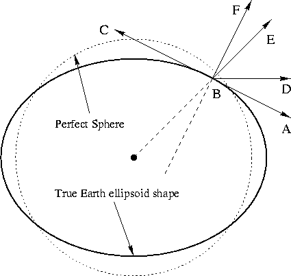
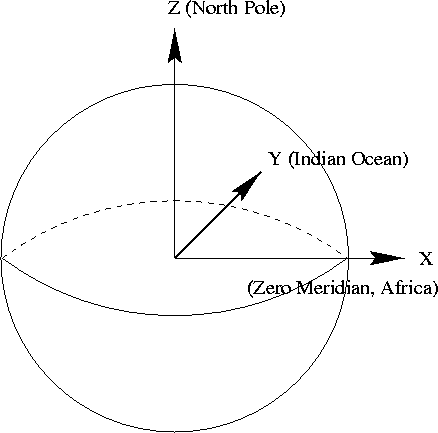
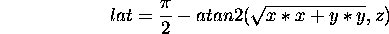

AboutHomeIntroduction Overview Features Screenshots DownloadsDownload ApplicationDownload Scenery Download Source Code FlightGear CD's FTP Mirrors SupportVersion SummaryHardware Requirements Documentation Places to Fly Lists, Forums, and IRC FAQ LinksRelated WebsitesRelated Projects ContributeContributingCVS Resources Goals Contributors Design Proposals Events |
Flight Gear Internal Scenery Coordinate Systems and Representations.
Curtis L. Olson
1 Coordinate Systems
1.1 Geocentric CoordinatesGeocentric coordinates are the polar coordinates centered at the center of the earth. Points are defined by the geocentric longitude, geocentric latitude, and distance from the center of the earth. Note, due to the non-spherical nature of the earth, the geocentric latitude is not exactly the same as the traditional latitude you would see on a map.
1.2 Geodetic CoordinatesGeodetic coordinates are represented by longitude, latitude, and elevation above sea level. These are the coordinates you would read off a map, or see on your GPS. However, the geodetic latitude does not precisely correspond to the angle (in polar coordinates) from the center of the earth which the geocentric coordinate system reports.
1.3 Geocentric vs. Geodetic coordinatesThe difference between geodetic and geocentric coordinates is subtle and must be understood. The problem arose because people started mapping the earth using latitude and longitude back when they thought the Earth was round (or a perfect sphere.) It's not though. It is more of an ellipse. Early map makers defined the standard geodetic latitude as the angle between the local up vector and the equator. This is shown in figure 1. The point marks our current position. The line is tangent to the ellipse at point and represents the local ``horizontal.'' The line represents the local ``up'' vector. Thus, in traditional map maker terms, the current latitude is the angle defined by .
However, as you can see from the figure, the line does
not extend through the center of the earth. Instead, the line
extends through the center of the earth. So in
geocentric coordinates, our latitude would be reported as the
angle

The LaRCsim flight model operates in geocentric coordinates internally, but reports the current position in both coordinate systems.
1.4 World Geodetic System 1984 (WGS 84)The world is not a perfect sphere. WGS-84 defines a standard model for dealing with this. The LaRCsim flight model code already uses the WGS-84 standard in its calculations. For those that are interested here are a couple of URLS for more information:
http://acro.harvard.edu/SSA/BGA/wg84figs.html To maintain simulation accuracy, the WGS-84 model should be used when translating geodetic coordinates (via geocentric coordinates) into the FG Cartesian coordinate system. The code to do this can probably be borrowed from the LaRCsim code. It is located in ls_geodesy.c.
1.5 Cartesian CoordinatesInternally, all flight gear scenery is represented using a Cartesian coordinate system. The origin of this coordinate system is the center of the earth. The X axis runs along a line from the center of the earth out to the equator at the zero meridian. The Z axis runs along a line between the north and south poles with north being positive. The Y axis is parallel to a line running through the center of the earth out through the equator somewhere in the Indian Ocean. Figure 2 shows the orientation of the X, Y, and Z axes in relationship to the earth.

1.6 Converting between coordinate systemsDifferent aspects of the simulation will need to deal with positions represented in the various coordinate systems. Typically map data is presented in the geodetic coordinate system. The LaRCsim code uses the geocentric coordinate system. FG will use a Cartesian coordinate system for representing scenery internally. Potential add on items such as GPS's will need to know positions in the geodetic coordinate system, etc. FG will need to be able to convert positions between any of these coordinate systems. LaRCsim comes with code to convert back and forth between geodetic and geocentric coordinates. So, we only need to convert between geocentric and cartesian coordinates to complete the picture. Converting from geocentric to cartesian coordinates is done by using the following formula:
Here is the formula to convert from cartesian coordinates back into geocentric coordinates:

About this document ...Flight Gear Internal Scenery Coordinate Systems and Representations. This document was generated using the LaTeX2HTML translator Version 96.1 (Feb 5, 1996) Copyright © 1993, 1994, 1995, 1996, Nikos Drakos, Computer Based Learning Unit, University of Leeds. The command line arguments were: The translation was initiated by Curtis L. Olson on Sun Feb 14 18:52:21 CST 1999 Curtis L. Olson Sun Feb 14 18:52:21 CST 1999 |